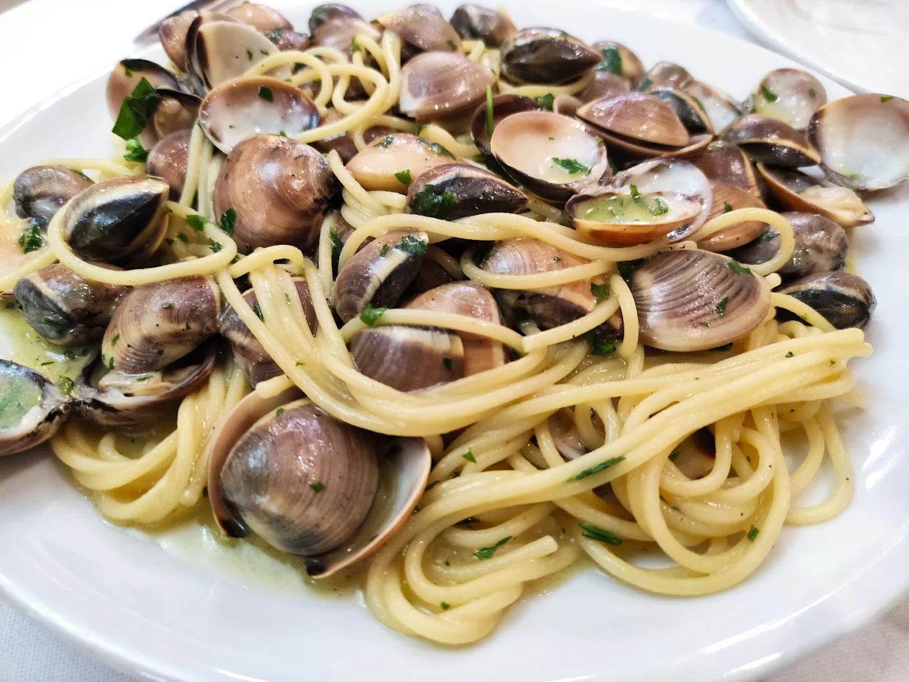
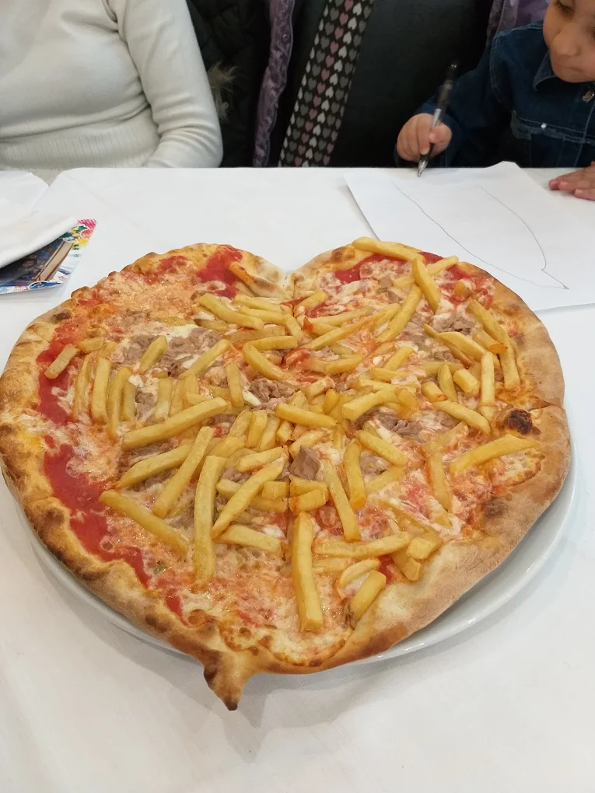
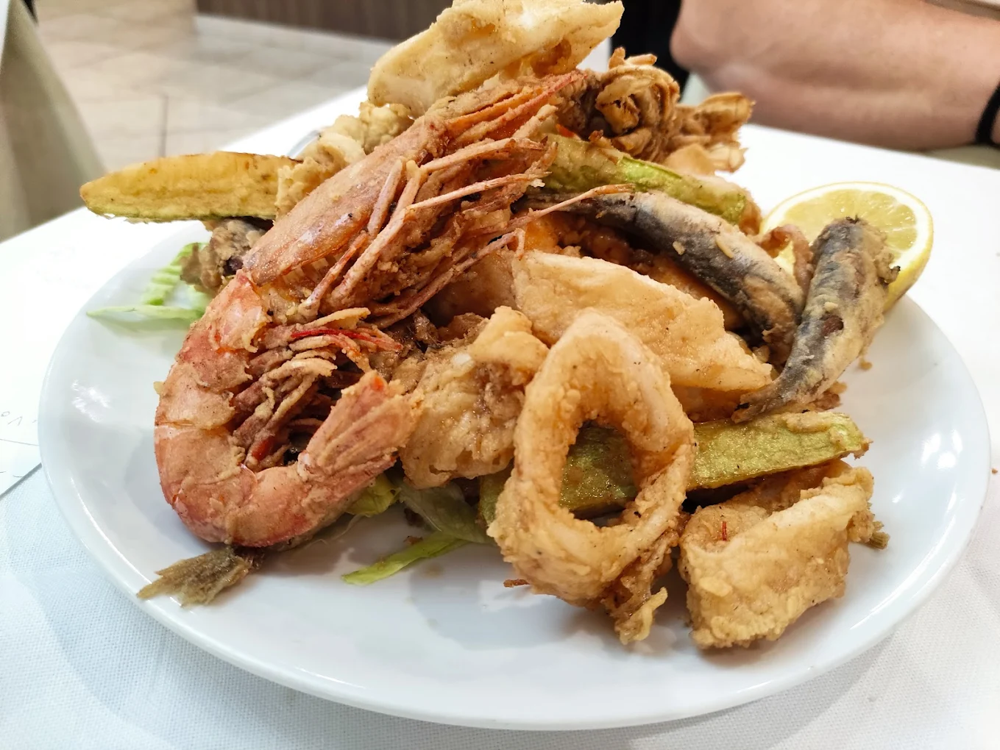

Il Nostro Ristorante

Vieni a Trovarci
Le Nostre Offerte
Menù Completo
Primo + secondo + contorno + bevanda + caffè
€ 10,00
A pranzo dal lunedì al sabato
Menù Primo
Primo + contorno + bevanda + caffè
€ 7,00
A pranzo dal lunedì al sabato
Menù Secondo
Secondo + contorno + bevanda + caffè
€ 8,00
A pranzo dal lunedì al sabato
Menù Pizza
Pizza + bevanda + caffè
€ 7,00
A pranzo dal lunedì al sabato
Pizza a Volontà
Incluse bevande e caffè
€ 10,00
Tutte le sere (minimo 4 persone)
Le Nostre Specialità

Piatto di mare

Pizza speciale
image.png

Antipasto misto